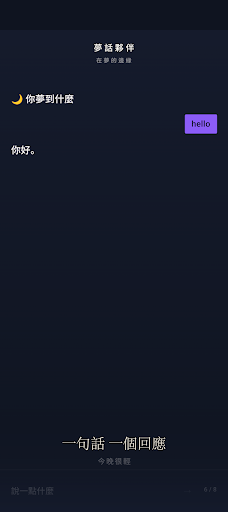
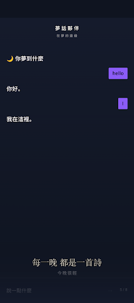

不用先整理好句子，想到哪裡就說到哪裡，保留剛醒來的真實片段。
AI APP · INTRODUCTION
夢話夥伴
半夢半醒的片段，也值得被溫柔記住。
在睡前或醒來時陪你說出零碎夢境，透過自然對話釐清人物與情緒，再整理成當晚可回看的夢日誌。
把功能留在
真正需要的時刻。
在睡前或醒來時陪你說出零碎夢境，透過自然對話釐清人物與情緒，再整理成當晚可回看的夢日誌。
AI 依內容補問人物、場景與情緒，幫助你找回容易消散的細節。
將對話重新整理成可閱讀的夜間紀錄，方便日後回顧。
用簡單的說話與記錄，形成不帶壓力的睡前或晨間儀式。
完整商店
宣傳圖集。
依照商店目前提供的宣傳素材完整排列；圖片維持原始比例，在手機上會自動換行，不再裁切主要畫面。


使用以前，
值得知道。
這些提醒協助你理解資料界線、平台狀態與合適的使用方式。
不做解夢診斷
內容用於陪伴與個人記錄，不取代心理、睡眠或醫療專業意見。
記得越少也可以
只有一句話或一種感覺，也能成為當晚的夢日誌。
平台狀態
Google Play 已提供下載，iOS 版本仍在開發中。